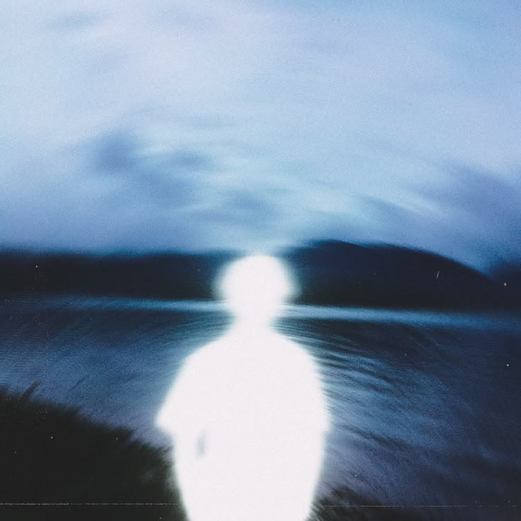

Siswa Teknik Komputer & Jaringan di SMKN 1 Katapang yang berdedikasi membangun infrastruktur jaringan, server, dan solusi IoT modern.
Seret untuk memutar · scroll untuk zoom

Status: Siswa SMKN 1 Katapang — TKJ
Lokasi: Indonesia
Membangun jaringan, server, dan solusi digital — satu konfigurasi dalam satu waktu.
Konfigurasi router, firewall, dan manajemen bandwidth.
Perancangan & troubleshooting jaringan optik.
Manajemen server dan administrasi sistem Linux.
Perakitan dan perawatan sistem komputer.
Konfigurasi firewall, IDS/IPS, VPN, dan proteksi jaringan dari ancaman cyber.
Pengembangan tampilan web dasar.
Aspirasi membangun ISP dan server mandiri di masa depan.
Saya tertarik pada bagaimana data mengalir — dari satu router ke router lain, dari serat optik ke perangkat pengguna. Bagi saya, jaringan yang stabil adalah karya seni tersembunyi.
Saya juga tertarik pada arsitektur server dan bermimpi suatu hari membangun ISP saya sendiri — menghadirkan koneksi internet yang cepat, stabil, dan andal untuk banyak orang.
"Jaringan yang baik tidak terlihat — ia hanya bekerja, setiap saat, tanpa henti."
Sistem parkir pintar terintegrasi sensor IoT untuk otomasi pencarian dan manajemen tempat parkir.
Sedang dalam pengembangan — jaringan dan server baru dalam perjalanan.
Memulai perjalanan formal di dunia jaringan dan komputer.
Belajar konfigurasi router dan jaringan fiber optic secara mandiri.
Mengubah teori menjadi sistem nyata yang berfungsi.
Menghadirkan koneksi internet sendiri yang cepat dan andal.
Punya proyek jaringan, server, atau ide IoT? Kirim pesan atau sapa saya lewat Instagram.